NextJs学习(一)
什么是 NextJs
从官方文档看，NextJs 是一个利用 React 构建全栈 Web 应用的框架，利用 NextJs,我们只需要专注于实现用户交互逻辑，其他的例如路由、打包、以及其它一些优化特性 NextJs 直接帮我们搞定，而且 NextJs 最主要的特性就是 SSR,它可以大幅提高 web 应用的响应速度和 SEO 优化，后端开发人员可以很快的上手开发全栈应用。
项目搭建
利用 create-next-app 脚手架可以快速搭建 nextjs 应用
1 | npx create-next-app@latest |
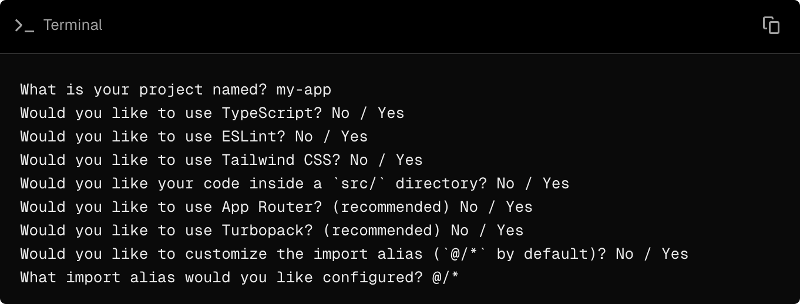
自动 nextjs13 以后，官方推荐使用 AppRouter 模式，结合现在比较火的 monorepo 架构，这个选项是比较推荐的
TailwindCSS 目前基本成为 CSS 原子化的标准，对于后端开发者来说太香了，很简单就能实现一些比较常规的布局和样式
另外 ESLint 和 Prettier 也推荐安装，一个管代码质量，一个管代码规范，绝配
项目目录
目前版本(15.5.2) 项目目录如下
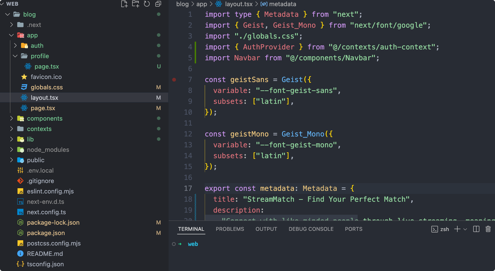
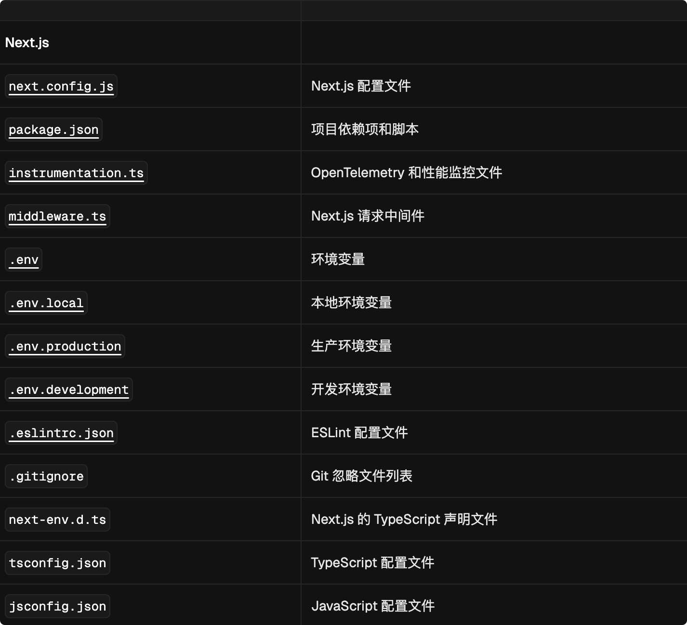
nextjs 使用文系统作为路由，即 nextjs 会自动根据项目目录中的文件结构生成路由，请求时接口和页面 path 对应这个路由的处理器，返回对应目录下的 page 和 route(只有这两个文件名的文件可以被访问到，保证了安全)
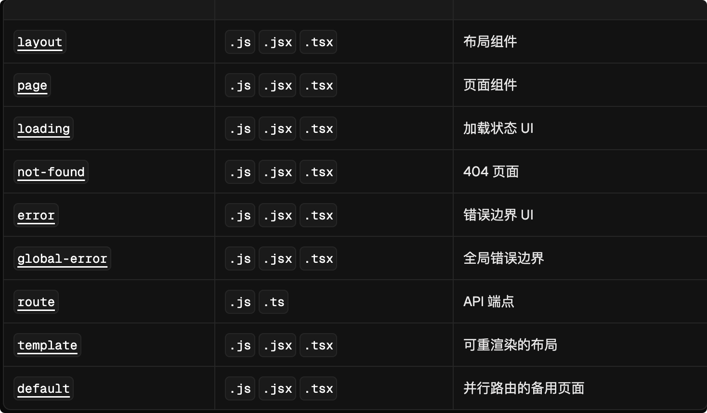
嵌套路由
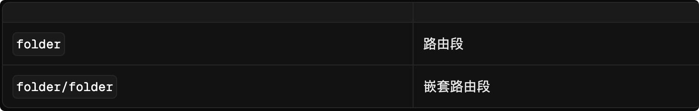
动态路由
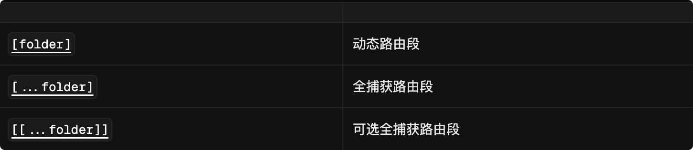
路由组与私有文件夹
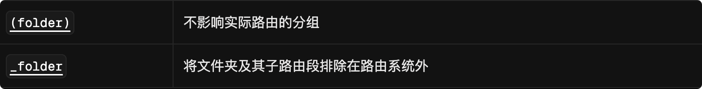
并行路由与拦截路由
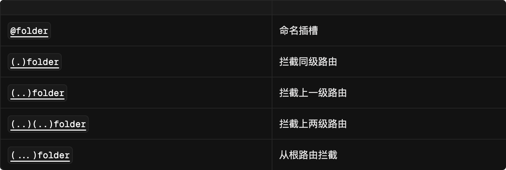
元数据文件约定
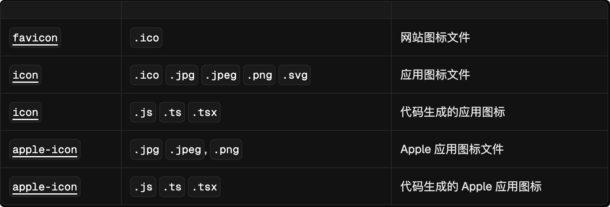
SEO
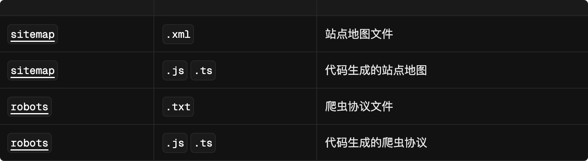
文件层级规约
特殊文件中定义的组件按特定层级渲染：
layout.js
template.js
error.js (React 错误边界)
loading.js (React Suspense 边界)
not-found.js (React 错误边界)
page.js 或嵌套的 layout.js
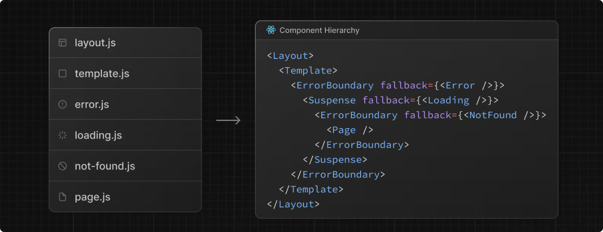
在嵌套路由中，组件会递归渲染，意味着子路由段的组件会嵌套在其父路由段的组件 内部 。
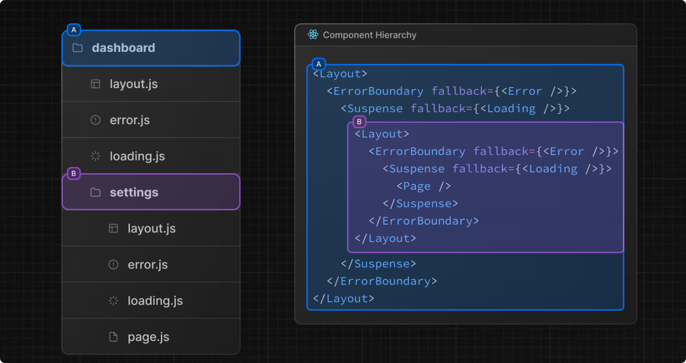
只有对应目录下的 page.js 或者 route.js 才能被路由到
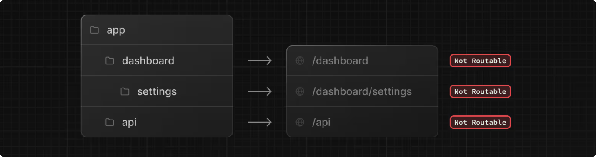
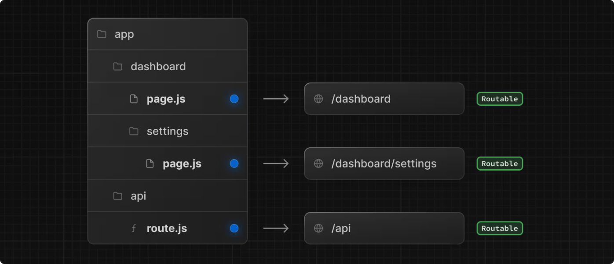
这意味着项目文件可以安全地同置于 app 目录的路由段中，而不会意外变为可路由。我们可以针对组件和一些公共逻辑抽取放到对应的目录，他们不会路由到，不用担心代码的安全